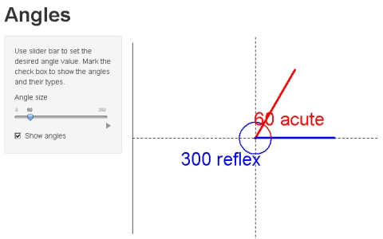

- This is a simple shiny application that shows different types of angles
- The usage of application is very straightforward: just use slider bar to set the desired angle value and mark the check box to show the angles and their types
- Angles are measured by degrees
